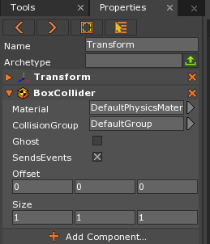

Box Collider
The BoxCollider component is one of the primitive Collider types available in the Zero Engine. It takes the shape of a rectangular box with the user setting the width, height, and depth. The BoxCollider component can be added to any object as long as it has a Transform component.
Common Uses
- Defining simple (sometimes inexact) collision boundaries for a Cog
- Defining a region where an effect takes place while the Player is inside it
- Defining a trigger zone that causes an event to occur
Using the BoxCollider
Creating a BoxCollider
When adding a BoxCollider component to an otherwise empty Transform object, the BoxCollider still retains all of its functionality and properties. The In-Editor properties for the BoxCollider can be seen in the following picture, where a BoxCollider component has been placed on an otherwise empty Transform object:

When this object is selected and viewed on the Level Window, the only thing that will be visible are the DebugDraw lines marking the boundaries of the BoxCollider; that is, the area in which collision will be resolved if this Collider comes into contact with another Collider of similar CollisionGroup type.
Applying BoxCollider to an Object
The BoxCollider component is best used with objects that have a rectangular shape. While it’s not the most efficient primitive collider (see: SphereCollider), it is more efficient than most other types and is therefore a good choice when applying collision to rectangular-shaped objects (or parts of an object that approximate a rectangle).
BoxCollider on a Cube
A Cube (or any perfectly rectangular shape) is the ideal type of object on which to use a BoxCollider as it will fit and scale with the dimensions of the cube perfectly. If one creates a Cube object, the Zero Editor anticipates the need for a BoxCollider and provides one already attached to the Cube object, as can be seen here:
The BoxCollider will scale along with any changes made to the size of the Cube. In the following screenshot, the size of the Cube has been changed to a non-uniform scale. As can be seen, the DebugDraw lines still fit perfectly around the scaled Cube:
One way to show this explicitly is to change the size of the BoxCollider itself. When changing the size of the BoxCollider, it is changed relative to the size of the Cube. That is, if the size of a BoxCollider on a scaled Cube is changed, the BoxCollider’s new size is still affected by the Cube’s size.
For example, if the BoxCollider’s size is changed so that its x-axis value is 2.0, the BoxCollider will increase in size on the x-axis double the amount of the Cube’s current x-axis value. As the BoxCollider’s size is now larger than the Cube, the BoxCollider DebugDraw lines appear outside the bounds of the Cube object. The following screenshot shows the BoxCollider with the following dimensions: [2.0, 1.5, 1.25]
The BoxCollider is now twice the size of the Cube on the x-axis, 1.5 times the size on the y-axis, and 1.25 times the size on the z-axis. So, in the case of using a BoxCollider with a Cube, the BoxCollider will provide precise collision relative to the shape of the object it is on, unless the user purposely changes the properties of the BoxCollider itself.
BoxCollider on a Non-Cube Shape
To look at how a BoxCollider can be applied to an object that is not perfectly rectangular, a model of an axe will be used, as seen here:
If one were to put a single BoxCollider on this object that covers the entire object, the volume for detecting collision would be almost twice the volume of the axe itself. It would resolve collision far outside the bounds of the model.
What can be done, however, is to use more than one BoxCollider to create a set of colliders that more accurately represents the object. In order to add all these new BoxColliders to the model, the user will need to:
- create objects with Transform components
- add BoxCollider components (just like in the section above)
- parent them to the object collision is being added to
- resize the colliders appropriately
The following screenshots illustrate this process step by step:
Empty Transform objects are created and BoxCollider components are attached to them, which are then parented to the Axe object:
The two colliders must be reshaped to approximate the two main parts of the Axe: the Head and the Handle.
The AxeHead BoxCollider is shaped to as close of an approximation as is possible, like so:
The pink DebugDraw lines represent the collision bounding box (i.e where collision will be detected), while the orange lines are the object’s bounding box (i.e. the Transform object that contains the BoxCollider component). Since the offset of the collider was changed the collision bounding box moved up, while the object bounding box grows to include the offset. This is all merely to say that the pink box shows the actual collision-detecting volume.
The AxeHandle Collider is shaped so that it fits quite snugly around the boundaries of the handle of the Axe, like so:
Now that they have both been reshaped, one can see the full collision boundaries set by the two BoxColliders (by selecting both of the BoxCollider objects in the Object Window), as is shown here:
While this setup is about as simple as one could make it, for a weapon of this type scaled to one-sixth the size of the player character, there need not be any more complexity brought to it. There will be some collision that will not be exactly along the lines of the model, especially around the head, but with a weapon like this most users would not want to take up the resources to make a more precise and complex setup of colliders.
If the user wishes for more precise collision, however, they may make BoxColliders for every mildly distinguishable rectangle shape that can be formed from the model, like so:
And the resulting Objects Window:
Ultimately, the choice of how many colliders one needs will come down to object in question and its place in the game.